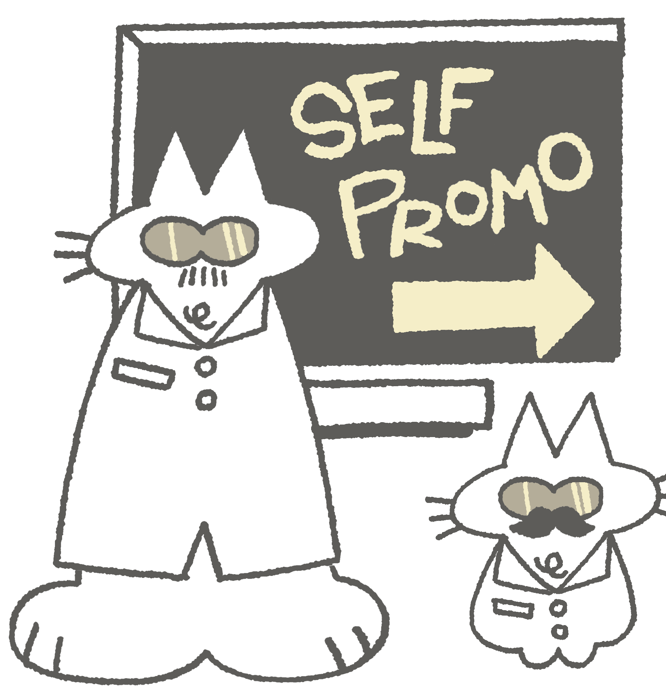

Posting Schedule
Quantity and consistent posting is important (pick a posting schedule that is sustainable for YOU. often people find that posting 2-3 times a week is tiring and can lead to burnout)

Quantity and consistent posting is important (pick a posting schedule that is sustainable for YOU. often people find that posting 2-3 times a week is tiring and can lead to burnout)
quality is important especially for making a consistent and curated art profile that is appealing to users! Hone into specific fandoms /communities you want to appeal to
Engage with your audience Interact with people on your account, make mutuals and friends and make sure your posts have your personal voice
Try out some art trends on social media: show current trends/audios and Participate in DTIYS and art challenges: it makes ur account easier to find
Pay attention to what works: see what types of videos and posts of urs the algorithm pushes and focus on them. For eg posting a lot of fannart from a show
Don't be discouraged or afraid to experiment! After all, your following does not matter, it is more about connecting with people and artists and sharing your creativity! You dont have to follow all these as they are just tips